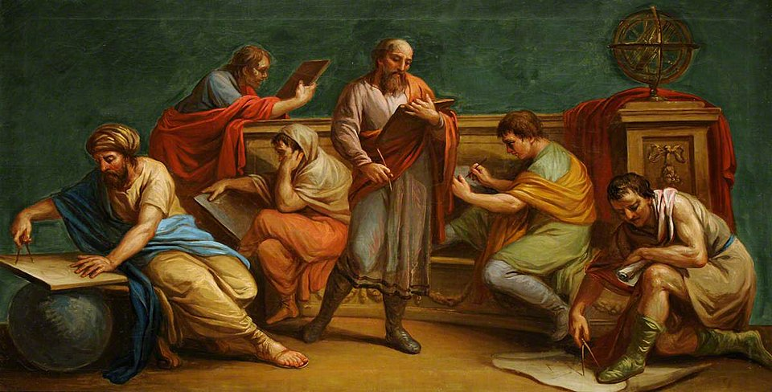

Collaboration vs. skill exploitation in academia

Working in academia requires collaboration. These collaborations take many forms: a PhD student collaborates with postdocs; a postdoc collaborates with principal investigators (PI); a PI collaborates with industry partners for fundraising. To an onlooker, such collaborations may appear effortless or mutually beneficial. For those involved, however, the reality is often different and parasitic. Overall, there is a thin line between productive collaboration and the exploitation of skill.
This line becomes blurry in interdisciplinary projects, where the trade-off between contribution and effort may favor researchers from certain disciplines over others. For example, a researcher from a technical field may spend a disproportionate amount of time establishing software/hardware infrastructure rather than conducting “research.” One could argue that infrastructure development is research, yet it is often treated as dreadful labor. The opposite situation is also common: once the infrastructure is established, a researcher from a non-technical discipline may spend long periods collecting data, work that is essential but frequently undervalued.
Unintentional imbalances can be tolerable. For instance, when meeting a milestone temporarily requires more technical effort. In some cases, however, such imbalances are deliberate. One party may take advantage of collaborators to reduce their own time investment while still sharing in its outcomes, e.g., sharing first co-authorship despite unequal contributions. In particular situations, collaborators may construct a (pseudo-)reputation by exploiting power dynamics within collaborations. This behavior is a form of rent-seeking in academia: benefiting from a project’s outcomes without meaningfully contributing to its process.
When projects fail, such individuals often bear less responsibility by deflecting blame onto “technical limitations” or “unexpected hardware challenges” to justify delays. When projects succeed, however, they may signal a disproportionate share of the credit and engage with public relation activities. While similar behaviors exist in many domains, their effects are especially destructive in academia, where career progression is fragile and where postdocs and PhD students are vulnerable.
If this is your first encounter with such a situation, you may not yet be equipped to handle the resulting toxicity. Over time, experience helps in distinguishing genuine experts from those who merely signal expertise. Navigating in academia is a long term game, and patterns of opportunistic behavior tend to become visible eventually.
References
Image adapted from
A Greek Philosopher and His Disciples (Wikimedia Commons).
_-_A_Greek_Philosopher_and_His_Disciples_-_960060.2_-_National_Trust.jpg){kind=link}